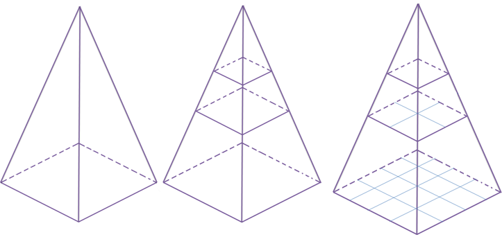
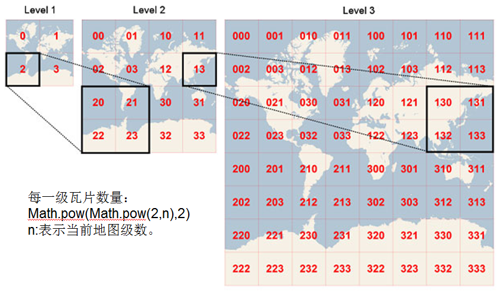
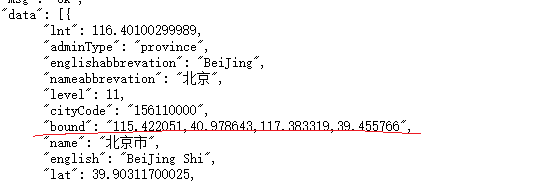

地图瓦片
- 为什么会出现瓦片：
- 金字塔切片规则：
- 刚才提到在服务器端对影像做切片处理，方法就是影像金字塔切图：


- 地理范围不变，层级不同或者说分辨率不同，地图的切片数量不同。
- 刚才提到在服务器端对影像做切片处理，方法就是影像金字塔切图：
- 瓦片地图比例尺和分辨率：
- 比例尺(scale):
图上一厘米代表实际多少厘米：例如1:500000 表示图上一厘米代表实际5000米。 - 分辨率(Resolution)：
代表当前地图范围内，1像素代表的实际地理单位 (X地图单位/像素) 即 分辨率和dpi(每英寸代表的像素数)和地图单位有关 - 根据比例尺求分辨率：
假设地图单位为米，dpi为96，那么已知：
1英寸 = 2.54厘米；
1英寸=96像素；
最终换单为米；
假设当前比例尺为1:500000，则代表图上1米代表实际500000米 ；
可得：1英寸=0.0254米=96像素；
1像素 = 0.0254/96 米；
则最后得出在1:500000比例尺下，分辨率：即图上1像素代表的实际距离为 500000*0.0254/96 = 132.2916666667 米
- 比例尺(scale):
切片行列号的计算原理
- 前面说了切片一些原理，同时提到金字塔影像切图方法，那么如果在前端展示某个地理范围，某个等级下的切片。我们就需要知道这片区域的行列号，按需加载请求展示。
- 同时说了分辨率的计算。为什么要说分辨率因为切片行列号的计算，是和分辨率分不开的。如果你不知道分辨率，也不知道比例尺，那就求不了行列号。
某个点(x,y)对应的行列号的计算公式：
Code1
2col = floor((x0 - x)/( tileSize * resolution))
row = floor((y0 - y)/( tileSize * resolution))其中 切片源点(x0,y0)， tileSize切片大小，一般为256,也有的是512的，resolution分辨率，图上1像素代表的实际地理单位。
公式说白了就是，一个瓦片代表的实际距离为L,点（x,y）距离的源点(x0,y0)的实际地理距离R,然后用R/L即可求得对应的行列号。
实际运用计算行列号原理
- 在实际运用计算行列号进行地图下载时，我们需要知道地理范围的bound（经纬度表示），即左上角的地理坐标(minLon,maxLat)，和右下角的地理坐标(maxLon,minLat)
- bound的获取方式，我一般都是用天地图的行政区查询接口
天地图行政查询接口
- 结果中的’bound’即为要获取的值
知道bound，然后依次求出该地理范围内对应的起始行列号：
//需要把经纬度转成web墨卡托平面坐标 X代表的是列，Y代表是行 leftTopX = Math.floor((Math.abs(originX - minX))/resolution*tileSize); leftTopY = Math.floor((Math.abs(originY - maxY))/resolution*tileSize); ... //按照上面公式继续求出起始行列号现在一个不成文的规定是，web端的底图投影的都是采用的web墨卡托投影。上述公式中的’originX,originY’是切片的源点，如果是按照google——tms标准的话，源点为左上角即：( -20037508.342787, 20037508.342787)。如果是标准的tms规则，则源点为左下角( -20037508.342787, -20037508.342787);因此下载地图的时候需要确定一下自己下载的地图是按照上面切片标准来的。这篇文章中可以查看到 这里
实际操作
- 知道bound，求出了起始行列号，剩下的就是进行下载地图了。
- mapDownload
总结
- 实际切片的原理不止这些。本文介绍的只是其中的一部分，还有很多基础原理没有介绍。我也没有具体掌握好就不再卖弄了。等我真正掌握了再后续补上。祝各位大小朋友，节日快乐！


{kind=link}
{kind=link}
{kind=link}